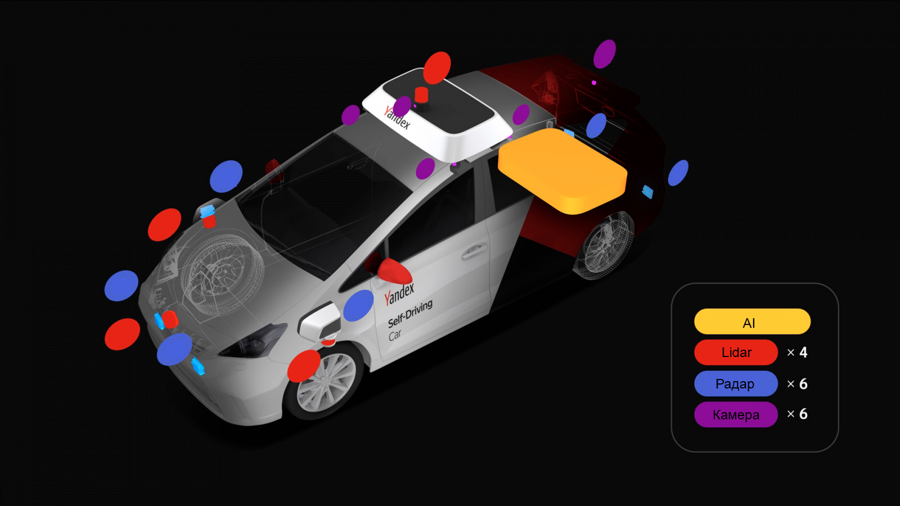
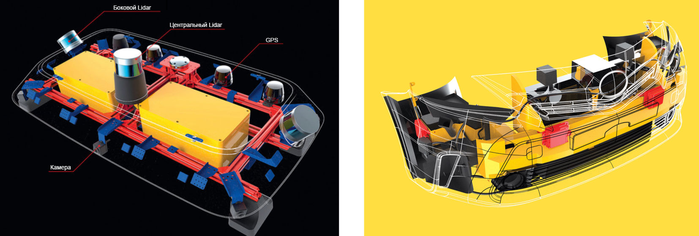
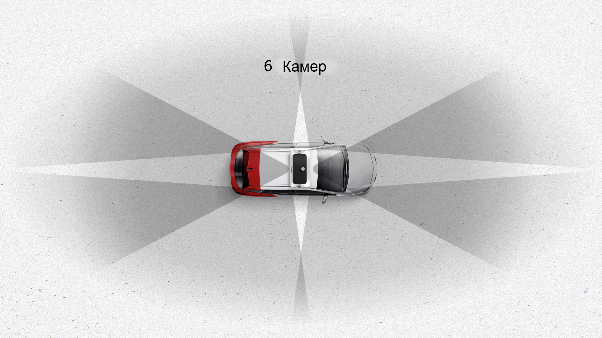
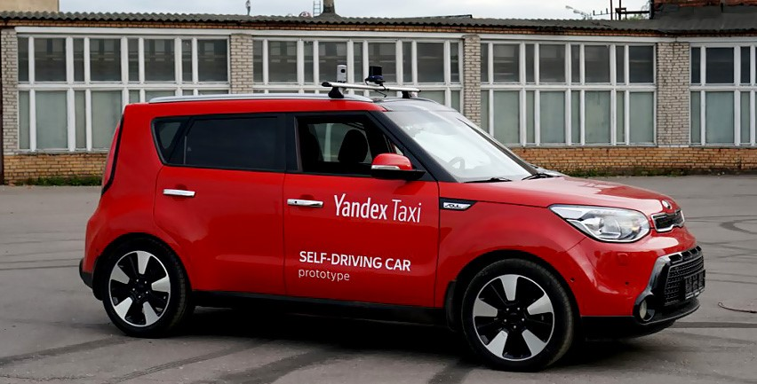
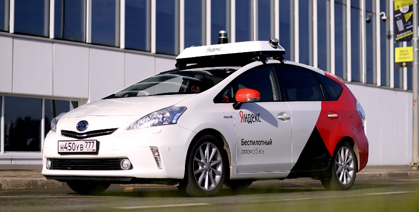
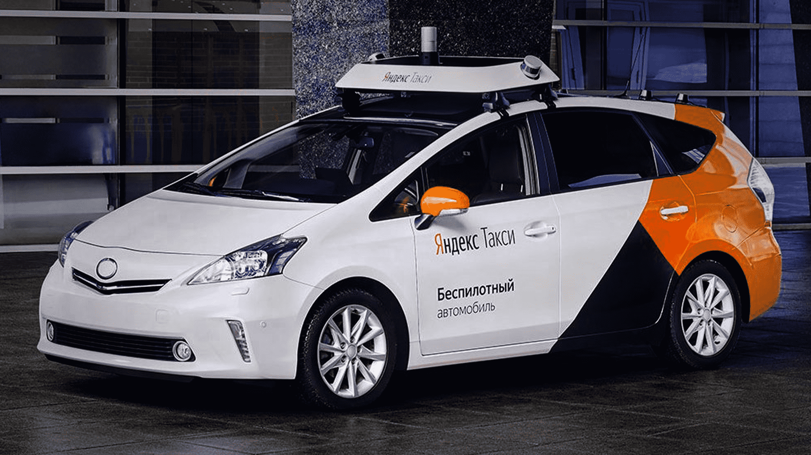
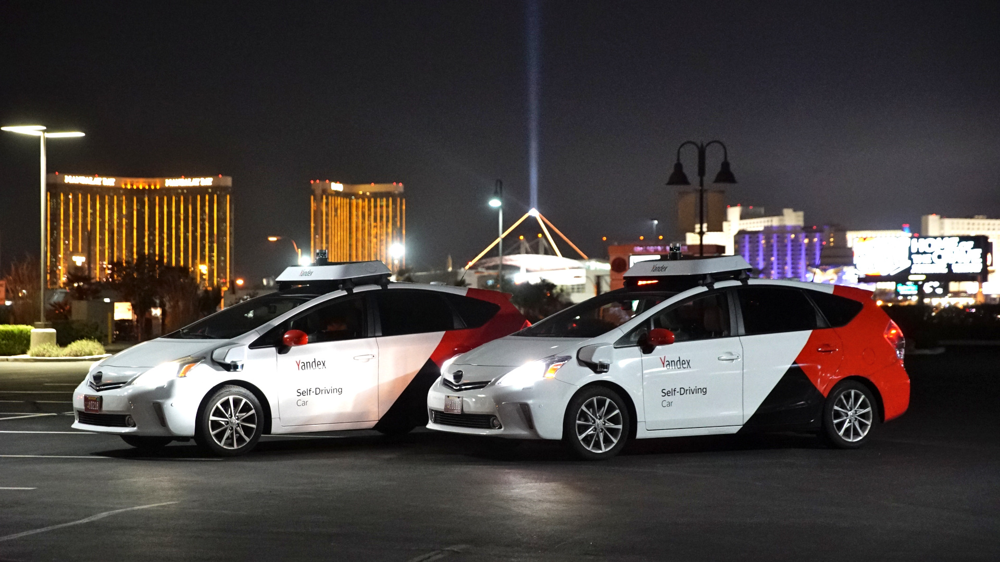
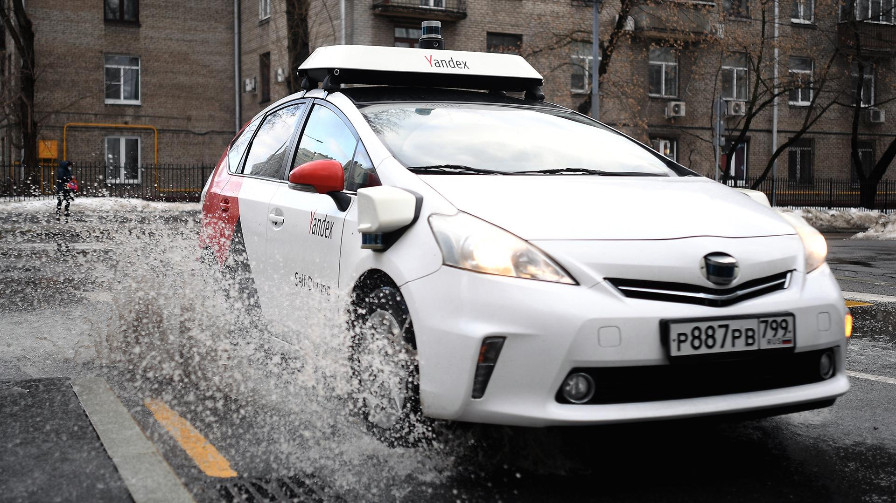

Беспилотные автомобили Yandex
Устройство беспилотного автомобиля Yandex
У каждого беспилотника Yandex 4 лидара: три в передне части автомобиля и один на крыше.
Беспилотник имеет ещё имеет 6 радаров: два - в задней части и четыре - в передней, в передней части 2 радара расположены сбоку.
И конечно же автомобиль имеет камеры: их всего 6 и они расположены на крыше беспилотника.

Расположение датчиков

- Шесть камер дают хороший обзор на 360 градусов, но есть и мёртвые зоны (изображение ниже). Также надо отметить, что камера - это единственный датчик, который может обнаруживать, например, светофор.

- Радары - тоже важный датчик беспилотника. У них не очень высокий угол обзора, но очень высокая дальность. Передние радары показывают, что происходит перед автомобилем, а задние помогают при маневрах (например, перестроении или обгоне). Радары сбоку используются для проезда сложных перекрестков, где нодостаточно информации от других датчиков.
- Самый интересный датчик - это Lidar. С него приходит информация в виде облака точек. На них видно все (изображение ниже).

Марки автомобилей
- Kia Soul
- самые перевые беспилотные автомобили Yandex, сейчас они не используются.

- Toyota Prius
- гибрид с мощнейшими аккумкляторами.

- Hyundai Sonata 2020
- самый новый беспилотник Yandex.
Галерея

- 
- 
- 